Comparisons
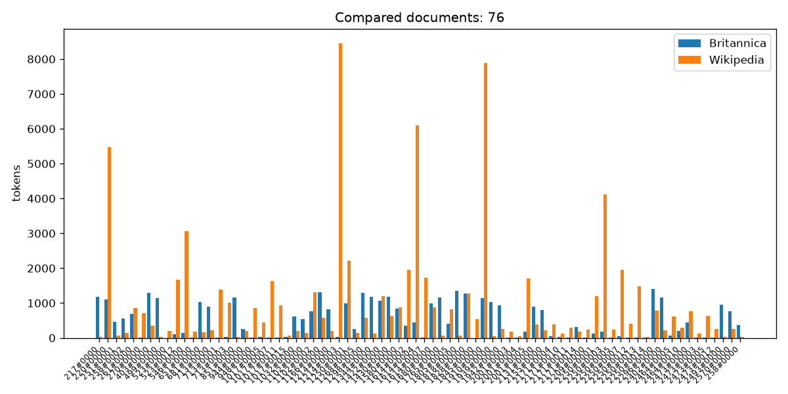
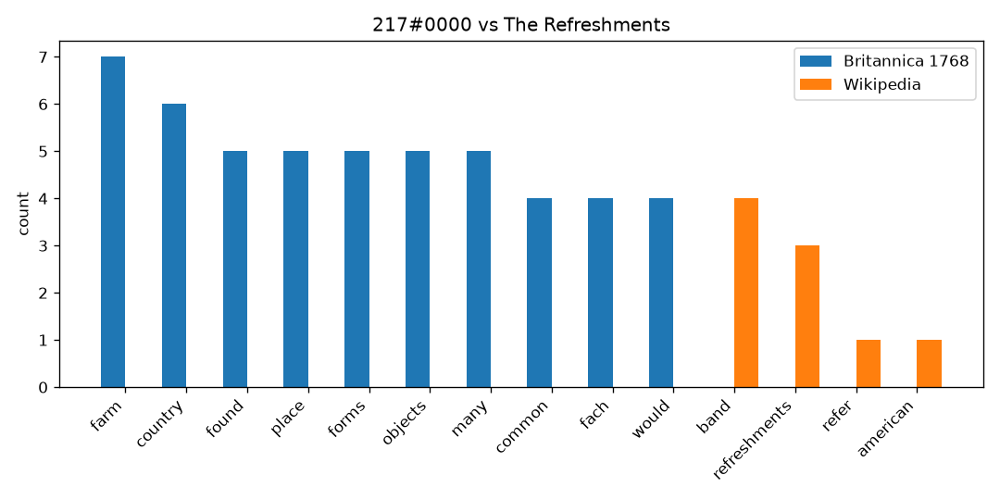
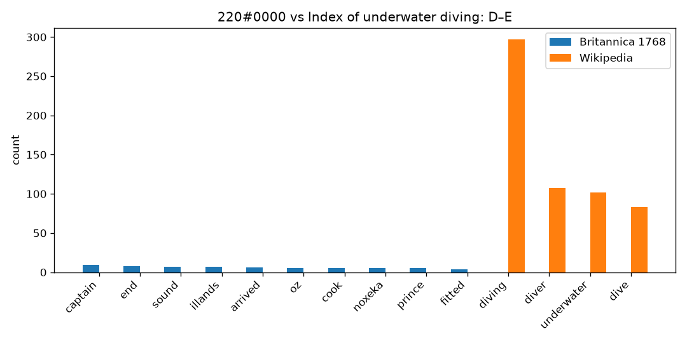
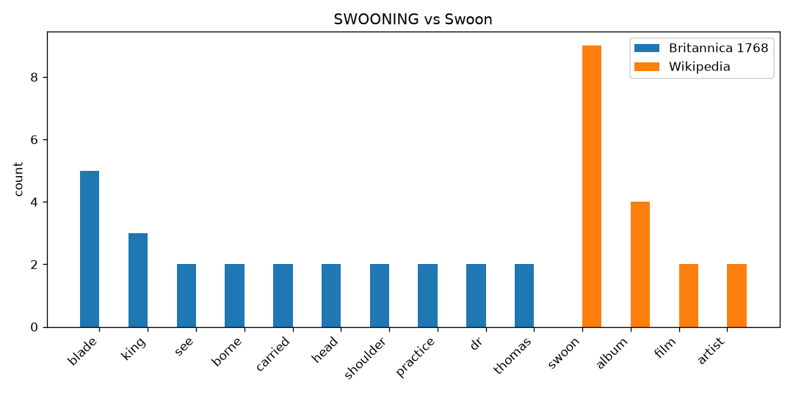
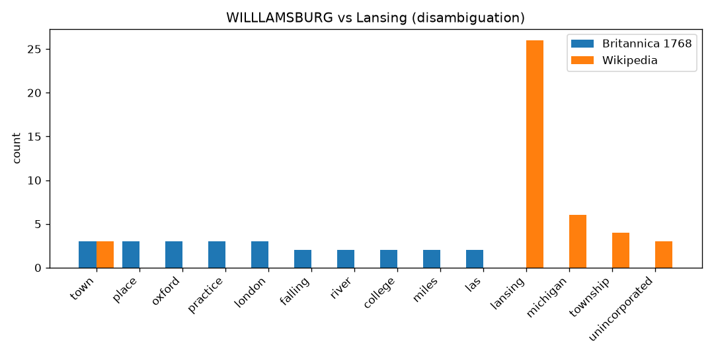
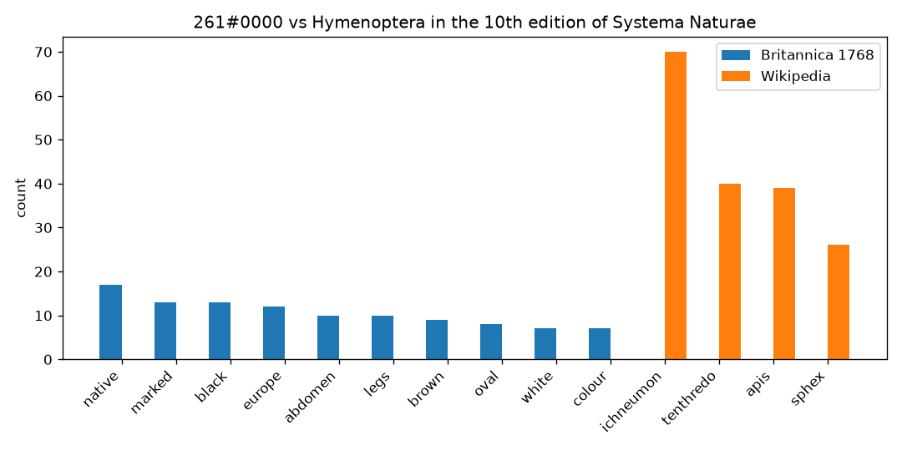
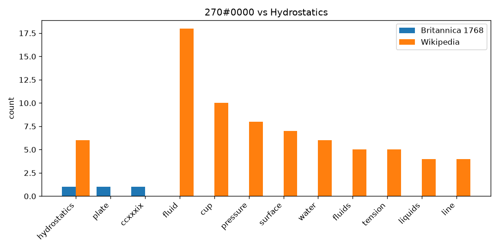
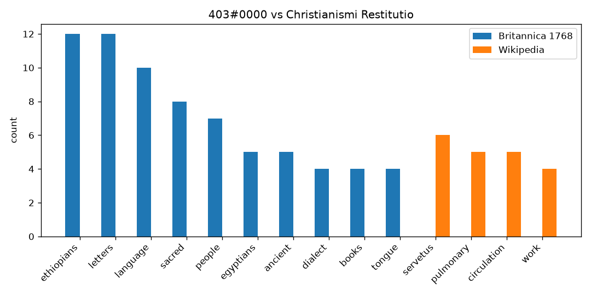
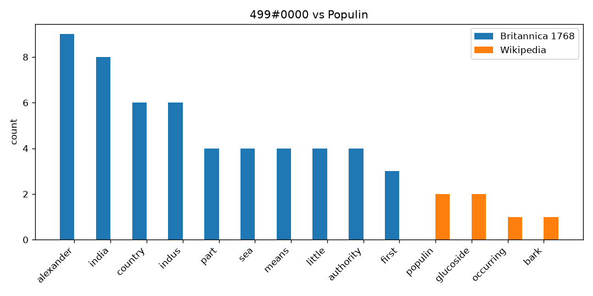
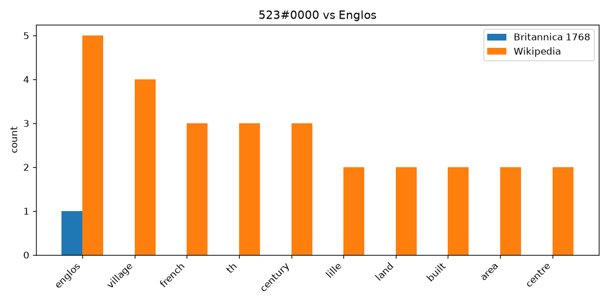
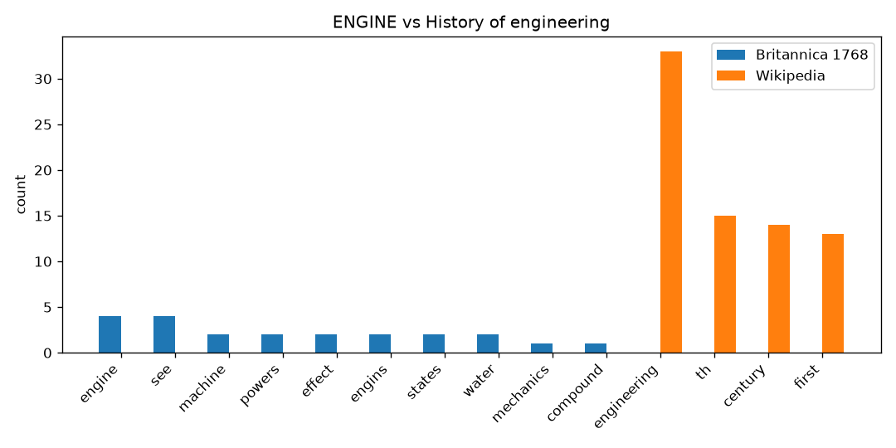
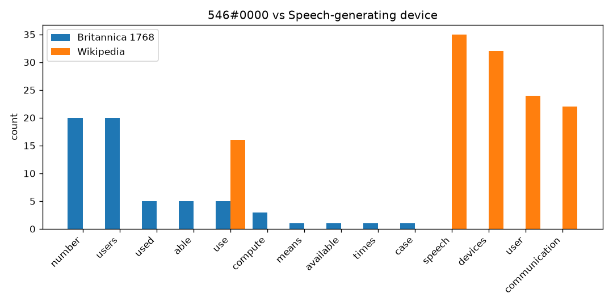
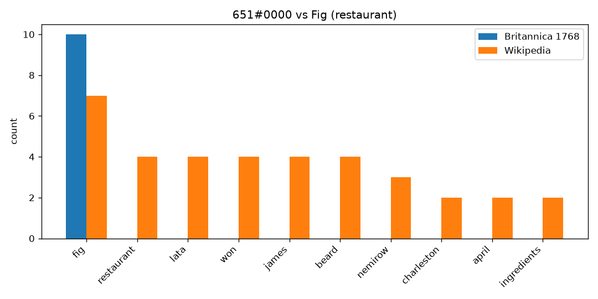
| Entry | Article | Britannica tokens | Wikipedia tokens |
|---|---|---|---|
| The Refreshments | 1177 | 21 | |
| Index of underwater diving: D–E | 1101 | 5483 | |
| SWOONING | Swoon | 465 | 73 |
| WILLLAMSBURG | Lansing (disambiguation) | 550 | 138 |
| Hymenoptera in the 10th edition of Systema Naturae | 689 | 859 | |
| Hydrostatics | 3 | 703 | |
| Christianismi Restitutio | 1287 | 344 | |
| Populin | 1143 | 26 | |
| Englos | 1 | 196 | |
| ENGINE | History of engineering | 114 | 1667 |
| Speech-generating device | 150 | 3064 | |
| Fig (restaurant) | 10 | 185 | |
| LIF | 1033 | 160 | |
| Accessory cloud | 900 | 218 | |
| OULENEY | Olney, Buckinghamshire | 12 | 1386 |
| OUNCE | Ounce | 21 | 1014 |
| Strong convergence | 1160 | 38 | |
| Barleycorn (unit) | 258 | 201 | |
| Russian monitor Lava | 3 | 856 | |
| HELMET | Chalcidian helmet | 36 | 445 |
| HELMONT | Aa (Meuse) | 18 | 1623 |
| HELSINGIA | Hälsingland | 18 | 930 |
| HEMEROBIUS | Hemerobius | 34 | 60 |
| Dama | 615 | 206 | |
| De tous biens plaine | 534 | 149 | |
| COMITA | Roman assemblies | 771 | 1318 |
| Howard Jarvis Taxpayers Association | 1318 | 581 | |
| Gaelic Storm (album) | 812 | 208 | |
| DANAE | Charon's obol | 28 | 8452 |
| COINAGE | Coining (mint) | 988 | 2214 |
| NAZARRHS | Nazareth (disambiguation) | 247 | 140 |
| Gratification | 1290 | 572 | |
| Hippocrates, father of Peisistratos | 1174 | 119 | |
| Title 42 appointment | 1064 | 1203 | |
| NASA Astronaut Group 11 | 1170 | 633 | |
| Outline of geometry | 834 | 885 | |
| THISTLE | Thistle | 341 | 1949 |
| THONF | Thomas of Cana | 445 | 6089 |
| THORAX | Thorax | 5 | 1719 |
| Isaac Carpenter (drummer) | 991 | 874 | |
| Transmigration | 1156 | 70 | |
| EXERCISE | Psychomotor agitation | 415 | 825 |
| Oregonite | 1352 | 74 | |
| Kammaṭṭhāna | 1282 | 1266 | |
| XVII Corps (German Empire) | 1 | 541 | |
| Lightning | 1149 | 7881 | |
| Hypochondriac (disambiguation) | 1026 | 49 | |
| Offender Assessment System | 935 | 264 | |
| SILEX | Silex | 3 | 172 |
| SILICEOUS EARTHIS | Siliceous rock | 6 | 40 |
| SILLIUS TALIOLOS | Silius Italicus | 184 | 1700 |
| Sidewalk cafe | 896 | 385 | |
| Jack's Reef pentagonal projectile point | 803 | 215 | |
| ATCHIEVEMENT | Achievement (heraldry) | 41 | 382 |
| ATERNUM | Aternum | 30 | 116 |
| ATESTE | Ateste | 14 | 292 |
| ATHANASIA | Athanasia | 318 | 172 |
| Kebon Kopi I inscription | 2 | 232 | |
| BUTTRESS | Flying buttress | 120 | 1196 |
| BUXTON | Buxton | 186 | 4115 |
| BUZZARD | Buzzard | 16 | 246 |
| BYLAWS | By-law | 57 | 1956 |
| BYZANT | Viliam Loviška | 3 | 397 |
| BYZANTIUM | Byzantium | 8 | 1477 |
| BZO | BZO | 9 | 29 |
| Kieren Keke | 1397 | 789 | |
| 1917 Wisconsin Supreme Court election | 1168 | 227 | |
| CABIN | Cabin (ship) | 59 | 605 |
| CABLE | Nautical cable | 207 | 301 |
| Grace Mildmay | 438 | 761 | |
| ERASED | Erased | 5 | 122 |
| REECTOR CLITORIS | Clitoral erection | 4 | 626 |
| ERIDANUS | Eridanos (Athens) | 5 | 261 |
| Tione degli Abruzzi | 945 | 34 | |
| William Walbe | 772 | 252 | |
| Finali (surname) | 375 | 21 |